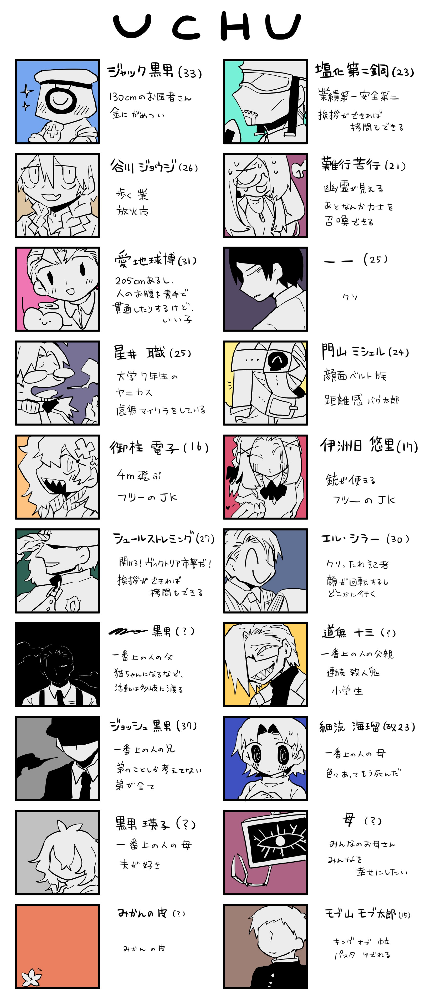
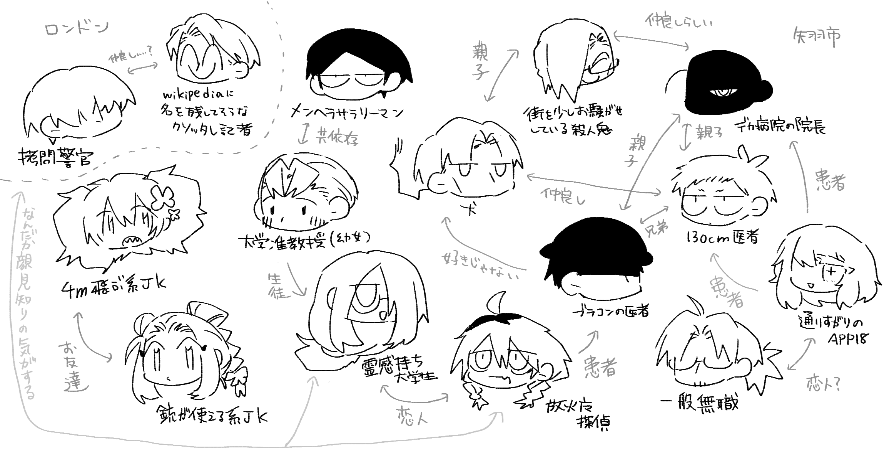

<!doctype html>
<html lang="ja">
    
</html>

	<head>

	    
<meta charset="utf-8">
  <meta name="viewport" content="width=device-width,initial-scale=1.0">

<meta NAME=”ROBOTS” CONTENT=”NOINDEX,NOFOLLOW,NOARCHIVE”>


<script src="//code.jquery.com/jquery-2.2.4.min.js"></script>
<script>
//共通パーツ読み込み
  $(function() {
       $("#side").load("side.html");

});
</script>

 <title>宇宙</title>
<link rel="stylesheet" href="style.css">


 	</head>

 	<body>

<div id="wrapper">
<div id="side"></div>
<!--
<div class="mb">
<a href="side.html"><font color="white"><b>★めにゅ～★</b></font></a></div>-->
  <div class="right-column">
<h1 id="hajimeni">はじめに</h1>
 <table>
	<tbody>
		<tr>
			<td>
			
			</td>
		</tr>
		<tr>
			<td>
				<p>
<b>〇サイトについて</b><br>宇宙のホームページです。</br>このサイトはPC閲覧推奨です。<br><br>
<b>〇そもそも宇宙って何！？</b><br>
TRPGをやっていたら生まれた共同創作のような何かです。<br>
現在（2021年1月末）8宇宙めまで開催しています。<br>
メンバー：牛乳、機、天文学</p>
			</td>
		</tr>
	</tbody>
</table>

<h1 id="character">キャラクター紹介</h1>
 <table>
	<tbody>
		<tr>
			<td>
				<p class ="gazou2"></p>
<a href="gazou/soukan.png"><p class ="gazou2"></p></a><br>
<p><font color="gray">画像提供：天文学さん</font></p>
			</td>
		</tr>
	
	</tbody>
</table>

<h1 id="replay">リプレイ・記録</h1>
 <table>
	<tbody>
		<tr>
			<td>
			<p>
<a href="https://heiwahuwahuwa.wordpress.com/">宇宙1　シナリオ：『リボルバー』（2020年6月開催）</a><br><br>
<a href="https://torikagoinsane.wordpress.com/">宇宙2　シナリオ：『午前零時の鳥籠』（2020年7月開催）</a><br><br>
<a href="https://motherinsane366484302.wordpress.com/">宇宙3　シナリオ：『自由と隷属と信仰の日』（2020年8月開催）</a><br><br>
宇宙4　シナリオ：『N川殺人事件』（2020年9月開催）<br><br>
<a href="https://4mhighjump.netlify.app/">宇宙5　シナリオ：『果てにて』（2020年10月開催）</a><br><br>
宇宙6　シナリオ：『Misty Night Nightmare』（2020年11月開催）<br><br>
宇宙7　シナリオ：『あと３時間で全員死ぬ』（2020年12月開催）<br><br>
宇宙8　シナリオ：『壁からエビフライが生えているんだが』（2021年1月開催）</p>
			</td>
		</tr>
	
	</tbody>
</table><br><br>
  </div>
</div>


</body>

 </html>
